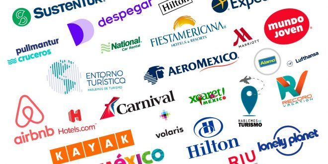

Cinemex empresa líder en entretenimiento, con más de 23 años en el mercado, se encuentra posicionado en el Top 10 de las mejores cadenas cinematográficas del mundo. Nuestra misión es dar a nuestros invitados la mejor experiencia de entretenimiento, basada en el esfuerzo, talento y compromiso de todos, generando valor, innovación y mucha diversión. Con la idea de poderle llegar cada vez a más invitados se ha mantenido una expansión continua a múltiples ciudades dentro de México. Hoy en día contamos con 335 complejos y 2,898 pantallas en 98 ciudades de la República Mexicana. Con la finalidad de hacer que nuestros invitados vivan al máximo La Magia del Cine, hoy en día contamos con diferentes tipos de salas: Pop, Tradicional, Premium, Palco y Platino, todas ellas equipadas con lo último en tecnología en audio y video, así como proyección digital, aunado al mejor servicio de nuestro staff para cada uno de nuestros invitados. También contamos con Cinemex 3D y 4D en donde podrás experimentar sensaciones reales de movimiento en sincronía con la película; así como las salas CinemeXtremo que cuenta con proyección digital y audio envolvente con sonido Dolby Atmos, que posiciona a Cinemex como la cadena de cines con más número de salas con este tipo de tecnología en Latinoamérica Somos pioneros en proyectar contenido alternativo, en donde los invitados pueden vivir inigualables experiencias en los partidos de la NFL, Ballet, Ópera y otras opciones de entretenimiento. Adicional, ofrecemos contenido vanguardista en Casa de Arte y funciones CineMá, donde los invitados podrán asistir acompañados de sus bebés a una sala acondicionada especialmente para ellos.

Enriquecemos la calidad de vida de las personas, embelleciendo, protegiendo y preservando el mundo con bienestar y optimismo, desarrollando soluciones innovadoras y de alta calidad para ser la mejor opción de nuestros clientes.
